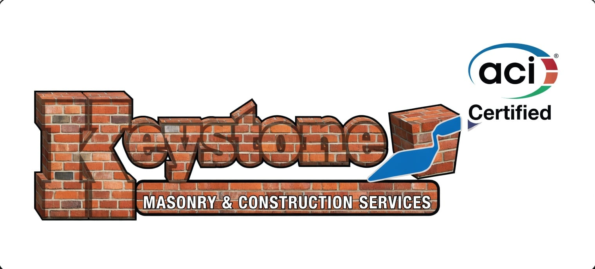
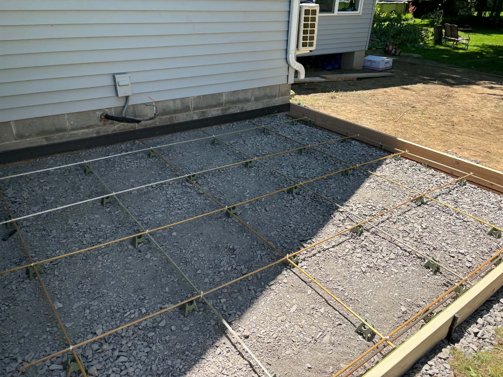
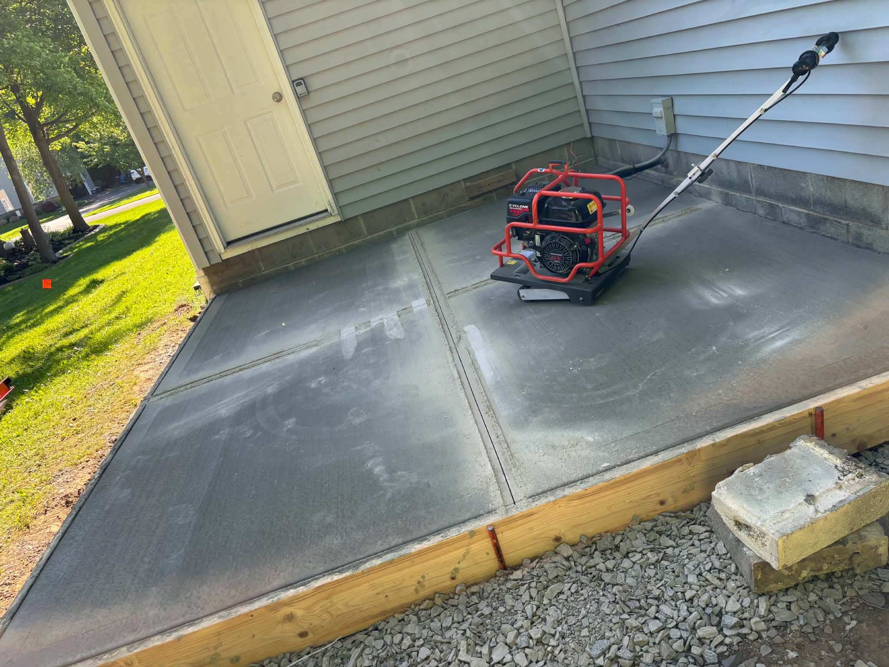
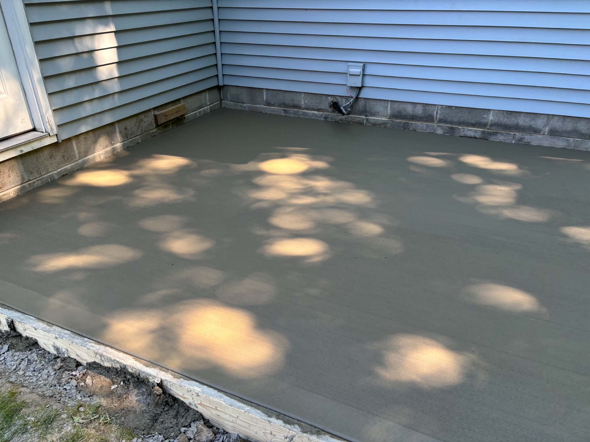
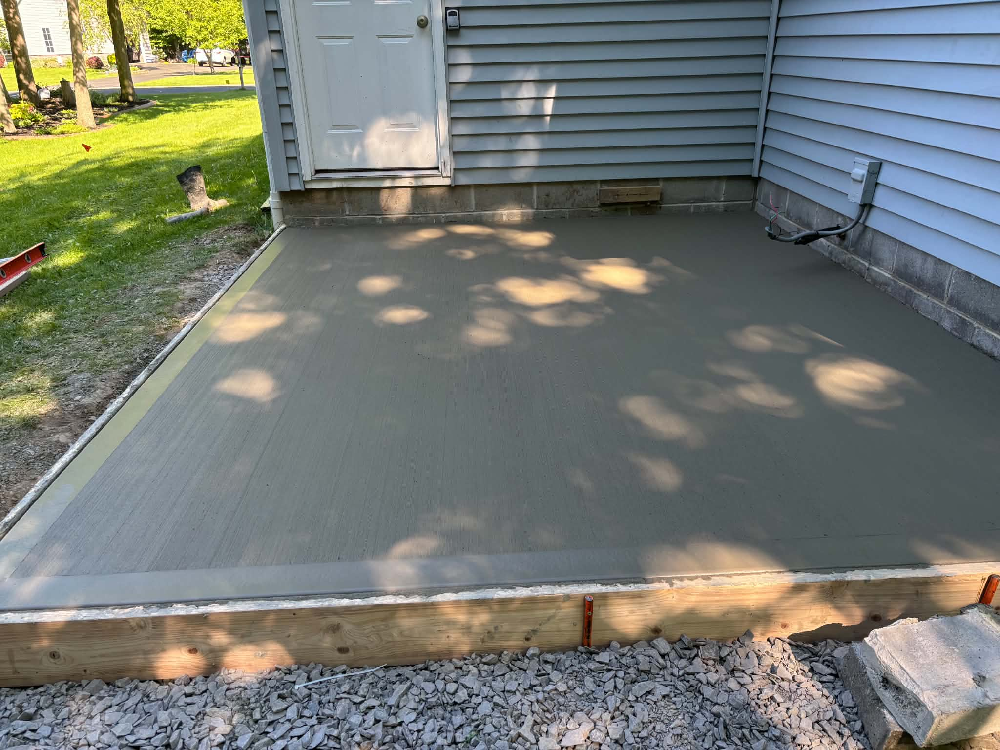
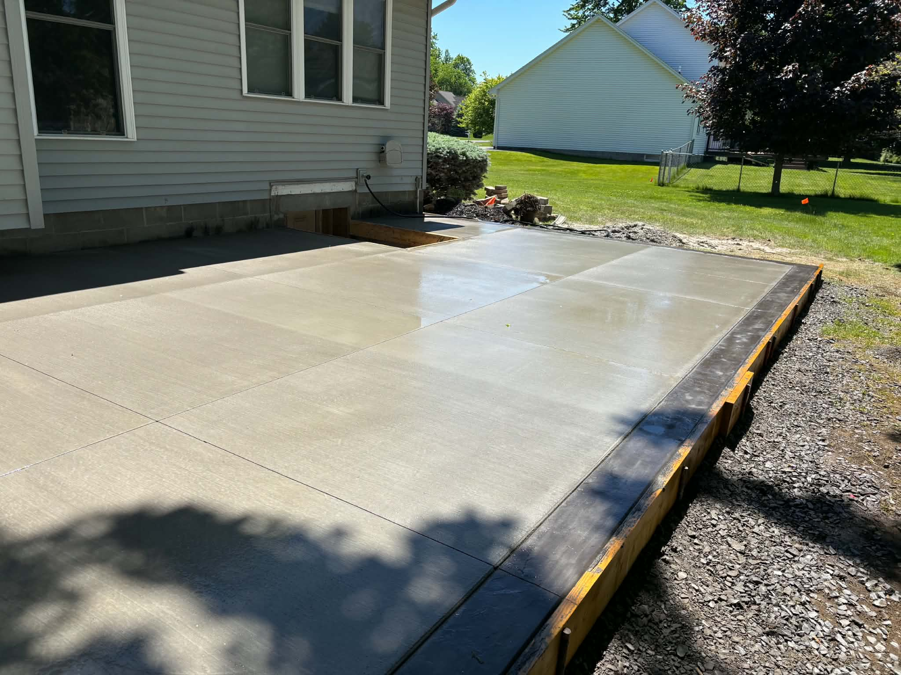
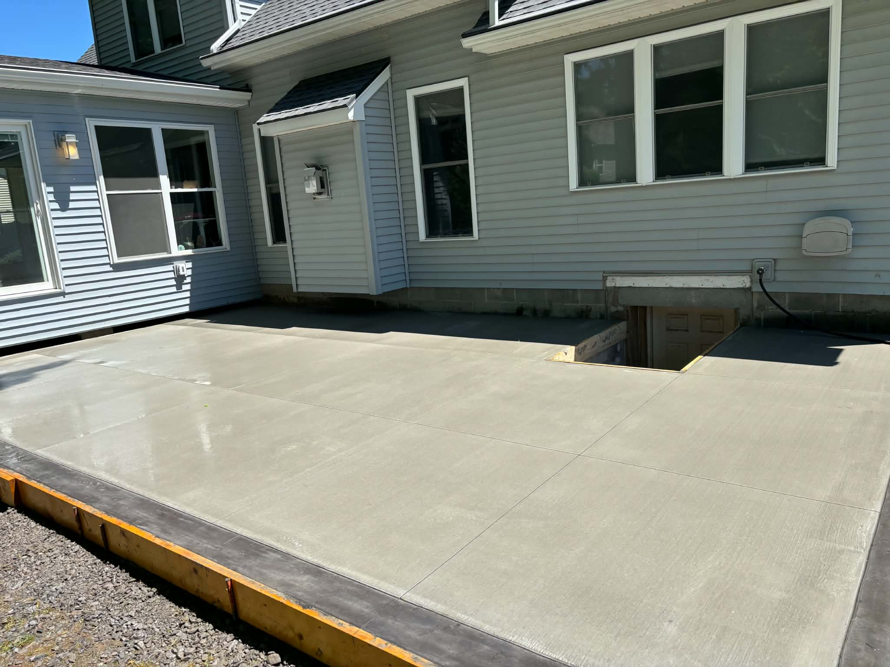
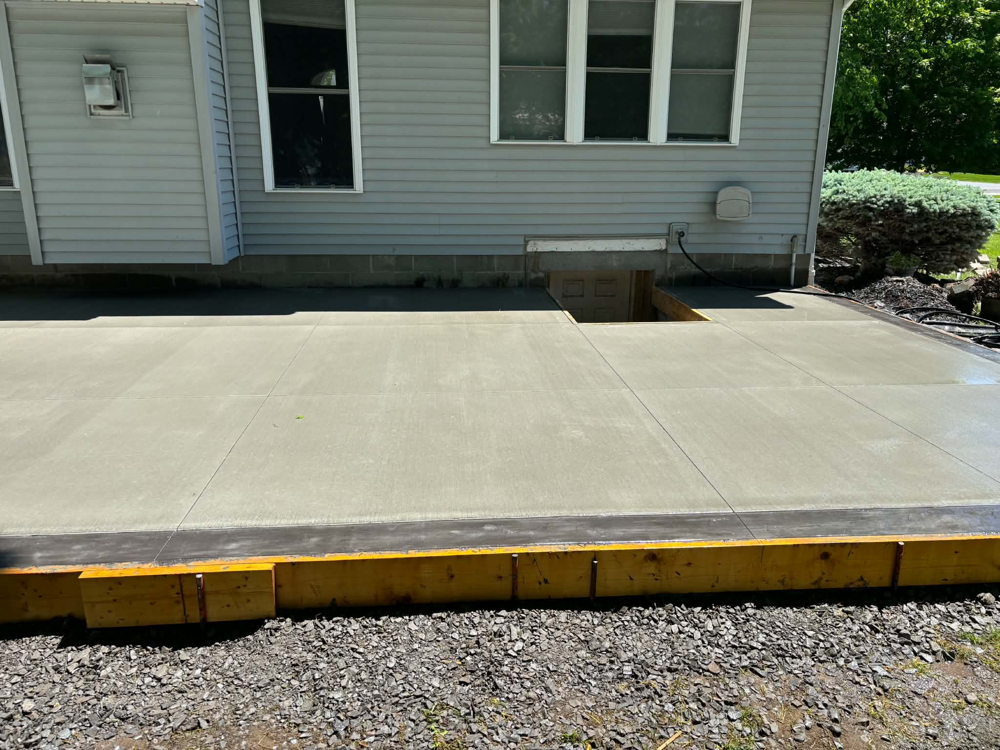

Project Photos
Masonry Work Across Rochester NY
Real projects completed by Don DeManno across Rochester, Pittsford, Greece, Webster, Irondequoit, Victor, Monroe County, and the surrounding area. Every job here came through a referral.
Projects — Monroe County
Recent Masonry Work — Monroe County

Form work

Cultured stone veneer, stamped cap

Segmented arch steps
Project — Monroe County
Stamped Concrete Patio — Pre & Post Seal
Stamped concrete patio with a contrasting color border. The two photos show the same patio before and after sealing — sealer deepens the color and locks in the finish.

Pre-seal
Stamped patio with different color border — pre seal

Post-seal
Same patio — post seal
Process — Monroe County
Stamped Concrete Installation — The Pressing Stage
Different job, same process. This is what the work looks like mid-pour: Don and the crew pressing large stamping mats into the surface before the concrete sets. The mats get repositioned section by section — timing and even pressure are what give the pattern its consistency. A rushed stamp shows up in the finished surface.

Don pressing the stamp — stamped concrete patio installation, Monroe County
Project — Webster NY
Concrete Patio Installation — Rebar Grid to Broom Finish
New concrete patio poured against an existing foundation in Webster NY. Work includes gravel base compaction, #4 rebar grid on chairs at 18″ o.c., pour, power-trowel finish, control joints cut, and final broom texture applied. Four photos show the full sequence.

Step 1 — Rebar prep
#4 rebar grid on chairs, gravel base compacted — Webster NY

Step 2 — Power trowel
Cyclone power trowel pass — surface consolidation before broom finish

Step 3 — Surface set
Slab leveled and screeded — forms still in place, curing in progress

Step 4 — Complete
Broom finish applied, control joints cut — Webster NY
Project — Webster NY
Large-Scale Concrete Patio Installation | Webster, NY
Large-footprint residential concrete patio engineered around an existing cellar entryway access. Sub-base: heavy-duty compacted crushed stone. Reinforcement: industrial rebar grid matrix elevated on high-chairs. Decorative finish: hand-troweled, smooth picture-frame perimeter border delivering high-contrast architectural styling against the broom-finished field. Custom wrapping footprint engineered around the existing residential cellar entryway access. Broom-finish field with control joints cut to spec.

Decorative detail
Hand-troweled picture-frame perimeter border — Webster NY

Full footprint
Large-scale concrete patio — custom footprint wraps existing cellar entry, Webster NY

Completed
Broom finish with picture-frame border, control joints cut — Webster NY
Technical Specifications
- Decorative Detail: Hand-troweled, smooth picture-frame perimeter border for high-contrast architectural styling.
- Footprint & Layout: Custom wrapping footprint engineered flawlessly around existing residential cellar entryway access.
- Foundation: Heavy-duty compacted crushed stone sub-base with an industrial rebar grid matrix elevated on high-chairs.
Project — Pittsford
Front Porch — ¼″ Stamped Concrete Overlay
Existing concrete porch with hairline cracks — structurally sound but the surface was done. Applied a ¼″ stamped concrete overlay to restore the finish without a full demo.

Front porch — ¼″ stamped overlay, Pittsford
Additional Work
More Masonry Projects — Rochester NY

Front walkway

Broom finish — Monroe County

Basement wall rebuild — structural CMU, temporary supports during construction

Chimney rebuild. Chimney repair page →
Project — Monroe County
Concrete Driveway — Before, During & After
Failed stone and cobblestone driveway demolished and removed. New reinforced concrete installed with proper base prep and expansion joints.

Before

During

After
See Something You Need Done?
Call Don for a free on-site estimate. He'll come out, look at the job, and give you a straight number.
585-490-1600Free on-site estimates across Rochester, Monroe County, Ontario County, and Wayne County.